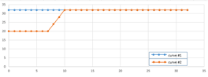
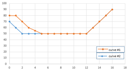

| BPS tuning / ADRC tuning concepts | |
| Parameter name | Length | Default | Min/Max | Effect | Suggestion |
|---|---|---|---|---|---|
| gtm_percentage | 1 | 0.2 | 0, 1 | Larger percentage creates more bright areas | Sum of GTM and LTM should be 1 |
| ltm_percentage | 1 | 0.8 | 0, 1 | Larger percentage creates more local contrast | Sum of GTM and LTM percentage should be 1 |
| knee_out_mid | 1 | 0.2 | 0.0, 1.0 | Larger mid value creates a brighter image | Use defaults to prevent artifact saturation
|
| dark_boost_ratio | 1 | 1.0 | 0, 1 | Larger ratio value creates a brighter shadowed image | Calibrate with AEC settings
|
| dark_boost_offset | 1 | 0.0 | 0, 4 | Larger offset value creates a brighter shadowed region; midtone highlight is not impacted | N/A |
| lnr_gain_arr | 33 | 32 array | 0, 32 | Lower value applies stronger noise reduction | Create a piece-wise smooth curve Figure : lnr_gain_arr example graph
 |
| blend_lnr_gain_arr | 17 | 32 array | 0, 128 | Higher value creates a noisier output | To preserve more details on both dark and highlight regions, use a
U-shaped curve Figure : blend_lnr_gain_arr example
graph
 |